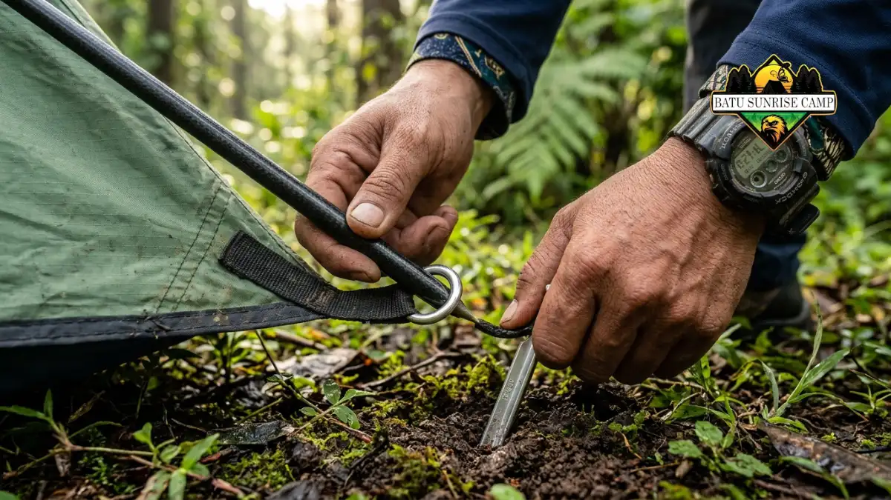

Cara merakit tenda camping yang benar dimulai dari memilih lokasi datar, merentangkan alas tenda, menyusun frame, lalu memasang pasak dan rainfly agar tenda kokoh dan tahan angin.
Tenda camping adalah tempat berlindung sementara berbentuk struktur kain yang ditopang oleh tiang atau frame, digunakan untuk bermalam di alam terbuka seperti gunung, pantai, atau area perkemahan.
Tenda ini penting bagi siapa saja yang beraktivitas outdoor karena berfungsi melindungi tubuh dari hujan, angin, embun, dan suhu dingin saat malam hari.
Memahami cara merakitnya dengan benar membuat proses berkemah menjadi lebih aman, efisien, dan nyaman, terutama bagi pemula yang baru pertama kali membawa tenda sendiri.Apa yang Dibutuhkan Sebelum Merakit Tenda Camping?
Sebelum merakit tenda, pastikan semua komponen tenda lengkap, mulai dari badan tenda, frame, pasak, rainfly, hingga guyline, serta area mendirikan tenda sudah dipilih dengan tepat.
Beberapa komponen utama yang wajib diperiksa sebelum mendirikan tenda antara lain:
- Badan tenda (tent body) yang berfungsi sebagai ruang utama tidur.
- Frame atau tiang tenda, biasanya berbahan fiberglass atau aluminium.
- Pasak tenda (tent stakes) untuk mengunci posisi tenda ke tanah.
- Rainfly sebagai lapisan pelindung tambahan dari air hujan.
- Guyline atau tali pengencang untuk menambah kestabilan saat angin kencang.
Selain kelengkapan alat, kondisi lokasi juga sangat memengaruhi kemudahan proses perakitan. Area yang datar, kering, dan bebas dari batu tajam atau akar pohon akan membuat tenda lebih mudah didirikan dan lebih nyaman digunakan untuk beristirahat.
Bagaimana Langkah-Langkah Merakit Tenda Camping?
Langkah dasar merakit tenda camping meliputi memilih lokasi, membentangkan alas dan badan tenda, memasang frame, mengaitkan frame ke badan tenda, memasang pasak, lalu menutup dengan rainfly.
Berikut tahapan lebih rinci yang umum berlaku untuk sebagian besar jenis tenda dome maupun tenda tunnel:
- Pilih dan bersihkan lokasi dari benda tajam seperti ranting atau batu.
- Bentangkan groundsheet atau alas tenda di atas tanah sebagai lapisan dasar.
- Buka badan tenda dan sesuaikan arah pintu dengan kondisi angin dan pemandangan yang diinginkan.
- Rakit tiang atau frame tenda dengan menyambungkan setiap segmen hingga membentuk struktur lengkung atau silang.
- Masukkan frame ke dalam sleeve kain atau kaitkan menggunakan clip yang tersedia di badan tenda.
- Dirikan tenda secara perlahan hingga frame membentuk struktur yang stabil.
- Tancapkan pasak di setiap sudut tenda dengan kemiringan tertentu agar cengkeramannya kuat.
- Pasang rainfly di bagian luar tenda untuk perlindungan ekstra dari hujan dan embun.
- Kencangkan guyline pada titik-titik yang tersedia untuk menambah kestabilan saat kondisi berangin.
Urutan ini dapat sedikit berbeda tergantung jenis dan merek tenda, namun prinsip dasarnya tetap sama, yaitu memastikan alas rata, frame terpasang kokoh, dan pengaman tambahan seperti pasak dan guyline terpasang dengan benar.

Memasang frame dan pasak tenda camping dengan cara yang tepat.
Mengapa Memilih Lokasi yang Tepat Itu Penting?
Lokasi yang tepat menentukan kestabilan tenda, kenyamanan tidur, dan keamanan dari risiko genangan air maupun pohon tumbang saat malam hari.
Beberapa faktor lokasi yang perlu diperhatikan meliputi kemiringan tanah, jarak dari sumber air, keberadaan pohon besar di sekitar area, serta arah datangnya angin.
Tanah yang miring dapat membuat posisi tidur tidak nyaman dan air hujan berpotensi mengalir masuk ke dalam tenda.
Area di dekat sungai atau danau sebaiknya dihindari karena berisiko terkena banjir dadakan, terutama saat musim hujan.
Apa Saja Jenis Tenda yang Umum Digunakan untuk Camping?
Jenis tenda camping yang umum digunakan meliputi tenda dome, tenda tunnel, tenda cabin, dan tenda backpacking, yang masing-masing memiliki kelebihan sesuai kebutuhan penggunanya.
- Tenda dome cocok untuk pemula karena bentuknya sederhana dan mudah dirakit.
- Tenda tunnel menawarkan ruang lebih luas, umumnya digunakan untuk camping keluarga.
- Tenda cabin memiliki dinding yang lebih tegak sehingga ruang gerak di dalamnya lebih lega.
- Tenda backpacking dirancang ringan dan ringkas, ideal untuk pendakian jarak jauh.
Apa Saja Kesalahan Umum Saat Merakit Tenda Camping?
Kesalahan umum saat merakit tenda camping meliputi memilih lokasi yang tidak rata, salah memasang frame, lupa memasang rainfly, dan menancapkan pasak dengan sudut yang keliru.
Kesalahan-kesalahan ini sering terjadi karena tergesa-gesa atau kurang memahami instruksi bawaan tenda.
Akibatnya, tenda bisa ambruk saat angin kencang, air hujan merembes masuk, atau proses bongkar pasang menjadi lebih sulit dan memakan waktu lebih lama dari seharusnya.
Apa Tips agar Tenda Camping Lebih Mudah dan Cepat Dirakit?
Tips agar tenda camping lebih mudah dirakit adalah dengan berlatih di rumah terlebih dahulu, menyusun alat sesuai urutan pemakaian, dan bekerja sama dengan pasangan atau rekan camping.
Beberapa tips tambahan yang dapat diterapkan:
- Latih pemasangan tenda di halaman rumah sebelum berangkat camping.
- Susun dan pisahkan komponen tenda sesuai urutan pemasangan di dalam tas.
- Gunakan sarung tangan saat menancapkan pasak di tanah berbatu.
- Simpan manual bawaan tenda dalam bentuk foto di ponsel sebagai referensi cepat.
- Lakukan pemasangan berdua agar proses lebih cepat dan stabil.
Kesimpulan
Cara merakit tenda camping yang tepat dimulai dari persiapan lokasi, kelengkapan alat, dan urutan pemasangan yang sistematis mulai dari alas, frame, pasak, hingga rainfly. Latihan rutin dan pemahaman terhadap jenis tenda yang dimiliki akan membuat proses berkemah menjadi lebih efisien dan minim risiko.
Pelajari lebih lanjut persiapan alat pada artikel Persiapan Sebelum Merakit Tenda Camping, kesalahan yang perlu dihindari pada artikel Kesalahan Umum Saat Merakit Tenda Camping, serta tips memilih dan merawat tenda pada artikel Tips Memilih dan Merawat Tenda Camping.